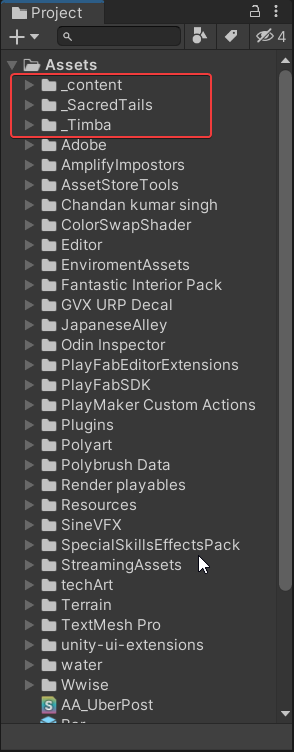
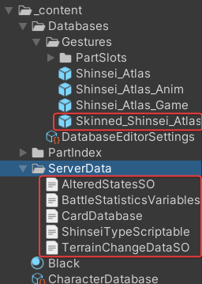
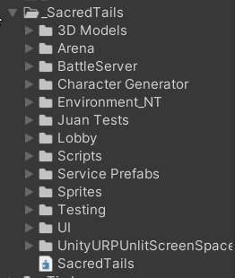
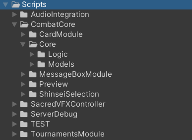
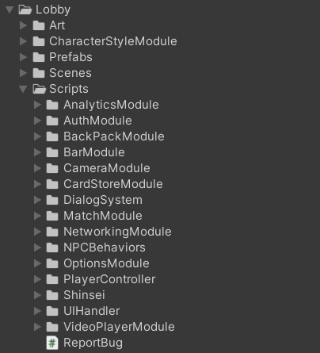
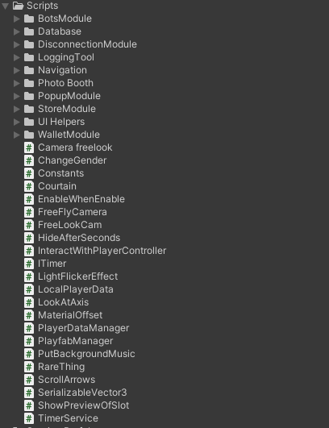
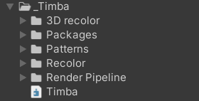

Project folder organization
It's important if you are recieving the project to know where each thing it's located. Currently the sacred tails folders that matter for development are these ones:

_content
Contains the character related prefabs and database

Main folders:
- Database: Database of the shinsei prefabs, partSlots and partEntities.
- Skinned_Shinsei_Atlas: Prefab of the shinsei used in the game.
- Server Data: Data from the multiple scriptable objects, converted into json. This data will have to be moved to the server manually each time a database is changed in order for both client and server to have the same data.
_SacredTails
Main scripts folder, contains the majority of the functionalities.

Lets break down the more simple modules:
- 3D Models: contains all the models and animations of the shinseis
- Character generator: Contains all the shinsei generation tool related scripts, assets and scenes.
- Enviroment_NT: Contains some enviroment assets.
- Scenes: All the main scenes of the game are found here.
- Service prefabs: Contains some prefabs to be used through the service locator.
- UI: All the UI related sprites animation and references are found here
Now let's break down more in depth the complex folders:
⚔️Arena
It's where all the battle and matches logic and assets are stored. Its divided into 3 folders prefabs, scenes and scripts. Each one is self-descriptive about what does it contains. Nonetheless, lets see the script folder in more detail:

- Audio integration: All the audio related logic integrated with wwise.
- Combat core: The main folder, contains all the essential scripts of the combat, such as the turnController, the battleGameMode, selection of shinseis, card logic, among others.
- Server Debug: Module for getting the information of the server and display it on the client by pressing "F1" while on a battle.
- TEST: Scripts used for testing different functionalities
- Tournament Module: Contains all the essential logic of the brackets tournament functionality.
🫂Lobby
It's where all the lobby logic is found. Its divided into 4 folders art ,prefabs, scenes and scripts.The main development folder its the scripts one, it contains all the different modules of the lobby: Its pretty straigth foward in regards to the folder structure, it has everything organized in modules. So we will not be explaining each one right now, but here its how it looks:

- Audio integration: All the audio related logic integrated with wwise.
- Combat core: The main folder, contains all the essential scripts of the combat, such as the turnController, the battleGameMode, selection of shinseis, card logic, among others.
- Server Debug: Module for getting the information of the server and display it on the client by pressing "F1" while on a battle.
- TEST: Scripts used for testing different functionalities
- Tournament Module: Contains all the essential logic of the brackets tournament functionality.
❔Scripts
It's where all the modules that doesn't necessarily have a relation with either the lobby or the arena. Its pretty straigth foward in regards to the folder structure, it has everything organized in modules. So we will not be explaining each one right now, but here its how it looks:

_Timba
Is where all the timba general patterns and utilities are located: Recolor for shinseis, Patterns such as the serviceLocator,URP settings, etc
